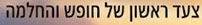
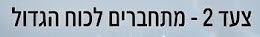
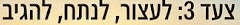
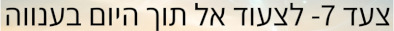
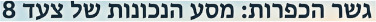
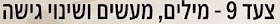
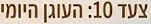

מדריך צעד 1
מדריך רוחני מבוסס בינה מלאכותית לצעד הראשון

מדריך צעד 2
רק להיום מדריך רוחני מבוסס בינה מלאכותית לצעד 2

מדריך צעד 3
בוט ליווי רוחני מבוסס בינה מלאכותית לצעד 3 - לעצור, לנתח להגיב
מדריך צעד 4
ספונסר וירטואלי מבוסס בינה מלאכותית לצעד 4 - טינות
מדריך צעד 4
מפחד לאמונה - מדריך רוחני מבוסס בינה מלאכותית על צעד 4 - פחדים
מדריך צעד 4
המשקף" - מדריך רוחני מבוסס בינה מלאכותית על צעד 4 לשחרור מטינה"
מדריך צעד 5
צעד 5 - חדר הכושר לכנות! - מדריך רוחני מבוסס בינה מלאכותית על צעד 5
מדריך צעד 6
המאזניים - כלי דיגיטלי מבוסס בינה מלאכותית לצעד 6

מדריך צעד 7
לצעוד אל תוך היום בענווה - מדריך רוחני מבוסס בינה מלאכותית לצעד 7

מדריך צעד 8
גשר הכפרות: מסע הנכונות של צעד 8 - מדריך רוחני מבוסס בינה מלאכותית לצעד 8

מדריך צעד 9
מילים, מעשים ושינוי גישה - מדריך רוחני מבוסס בינה מלאכותית לצעד 9

מדריך צעד 10
העוגן היומי לחיים של החלמה - מדריך רוחני מבוסס בינה מלאכותית לצעד 10
מדריך צעד 11
זמן איכות עם הכוח העליון - מדריך רוחני מבוסס בינה מלאכותית לצעד 11
מדריך צעד 12
צעד 12 - המצפן הרוחני לכל תחומי חיינו והעברת המסר - מדריך רוחני מבוסס בינה מלאכותית לצעד 12".